Free and open source
PS5Upload 12 Play together from anywhere, Tailscale built in, Share, and every PS5 on one pageYour PS5, on every screen.
Play your PS5 from your computer, phone or browser, and manage everything on it from the same app: install games, move files, keep your saves and set it all up with a checklist that ticks itself.
macOS · Windows · Linux · Android · iPhone · Docker
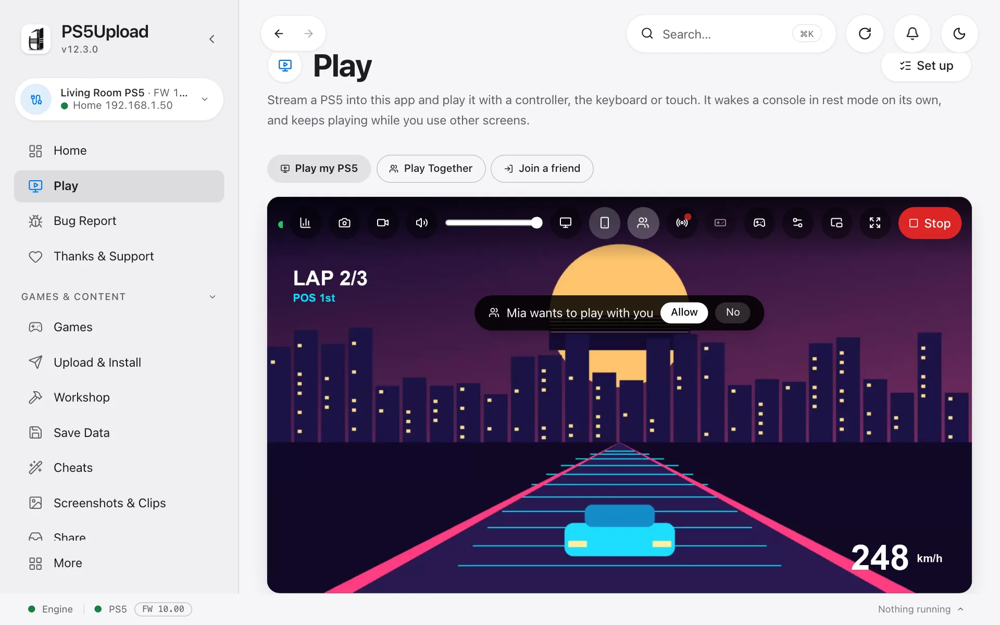
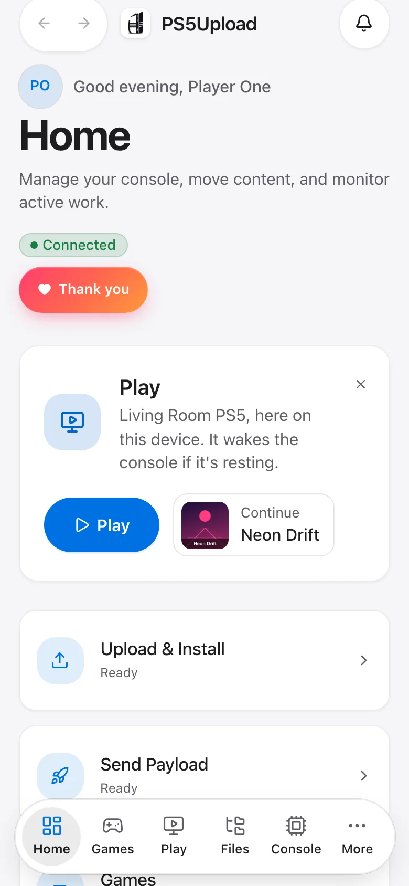
- 6 platforms
- 21 languages
- 1 app for play and management
- 0 cost: free and open source
New in 12.2
Every PS5, on one page
Connection shows each PS5 as a card: whether it's online, how this device reaches it, its helper and firmware, and who may use it. Setup steps show only until it's ready.
Everything about a PS5, at a glance
Each card says whether the PS5 is online and how this device gets there: your home network first, or Tailscale when you're away. Its helper, firmware and the ways to reach it are right there, with Invite, Resend helper and its settings one press away.
- Shows as connected in about a second when the app opens
- One slow answer no longer reads as offline: it takes three failed checks in a row
- Settings like keep awake and rest after uploads are kept for each PS5
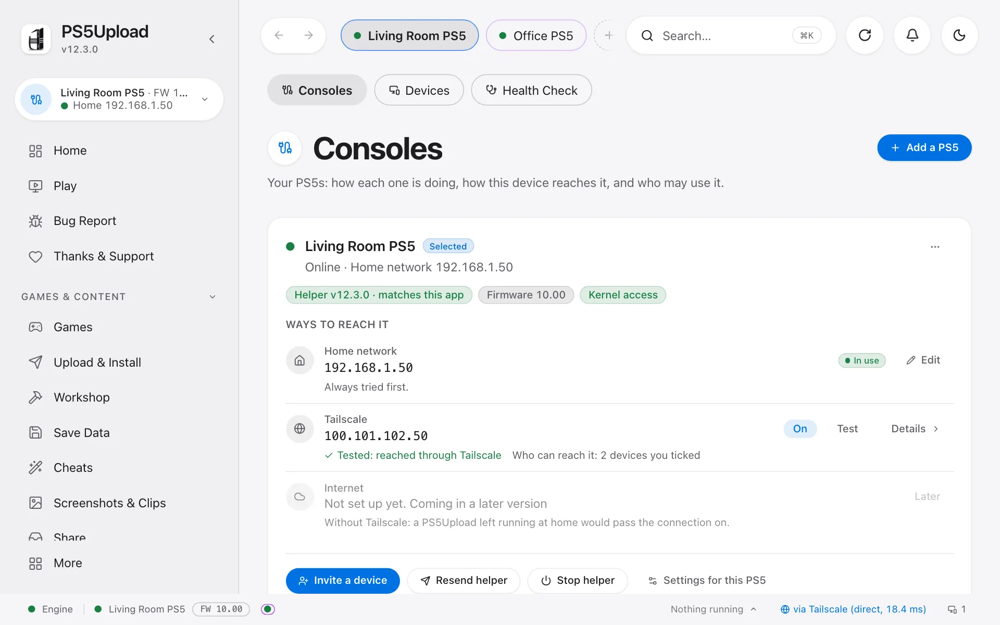
Add a PS5 in one scan
A PS5 already on your Tailscale network shows up on the page by itself, ready to add. One scan looks on your home network and on Tailscale, and a PS5 found both ways shows once. You can also scan an invite's code, paste its link or type an address.
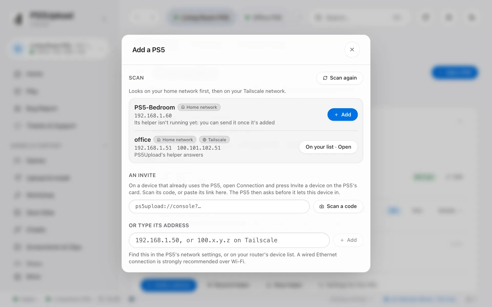
Show moreShow less
You decide who may use it
Turn on Ask before a new device can connect and a new phone or computer has to ask first. Press Allow or Decline on any device that uses the PS5, on its card, or on the PS5's own page. A device can't allow itself.
- See how each device got in: paired, invited and allowed, the home network or Tailscale
- Revoke a device, or block it for good
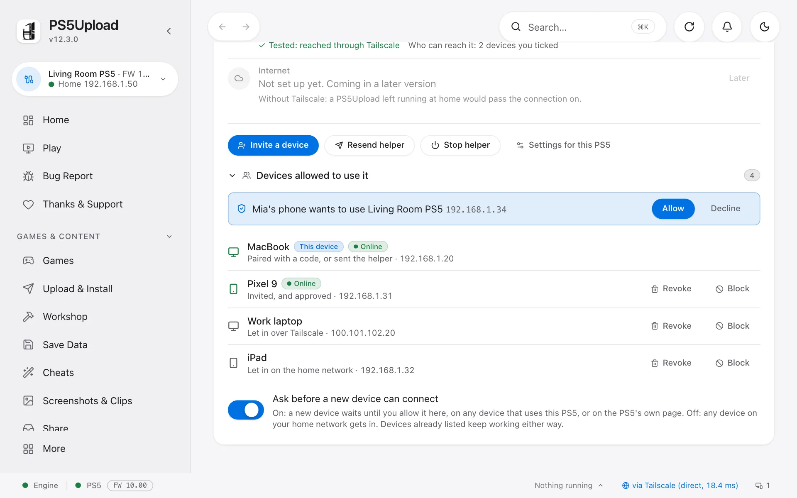
Invite your other devices
A QR code and a link that add the PS5 to a new phone or computer, with its home and Tailscale addresses. The link only says where the PS5 is: it lets nobody in by itself.
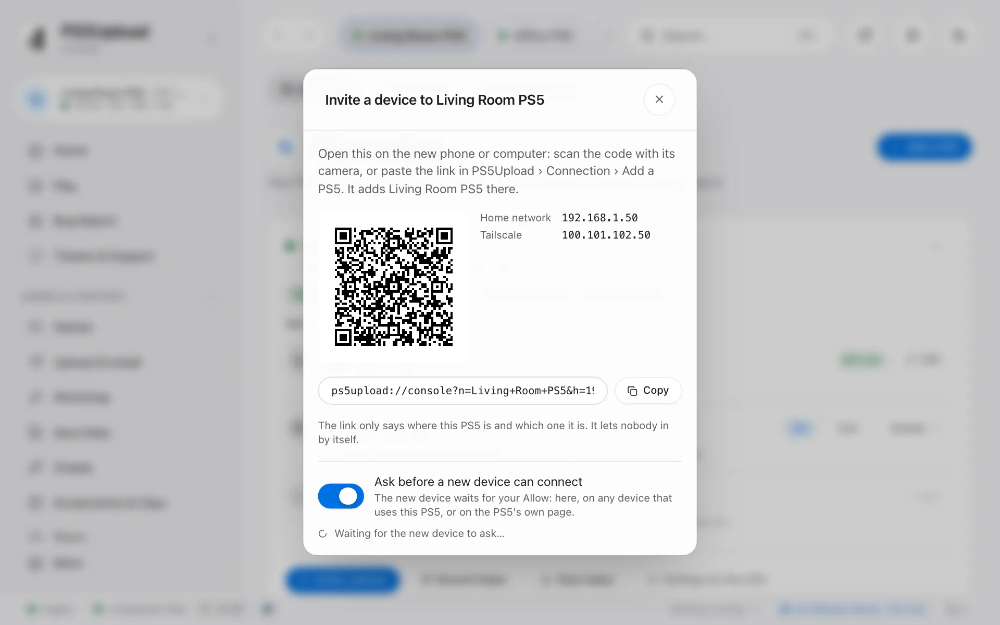
One link, from anywhere
Play Together: your friends, on your PS5
Send a link and friends join the game you're playing as Player 2, 3 and 4, each with their own controller, from your Wi-Fi or from anywhere. They need no PS5 and no app: a browser on a phone, tablet or computer will do.
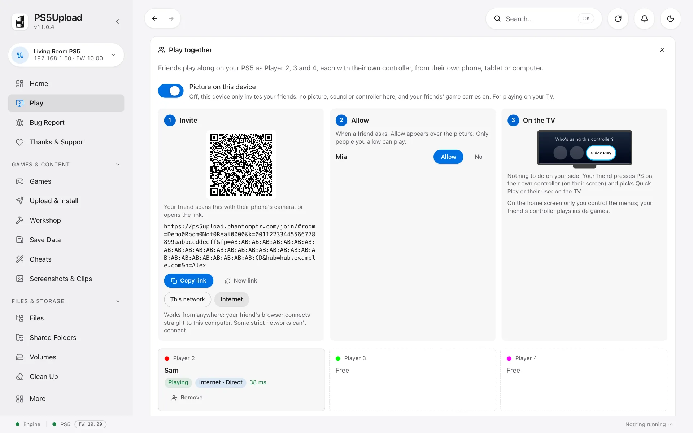
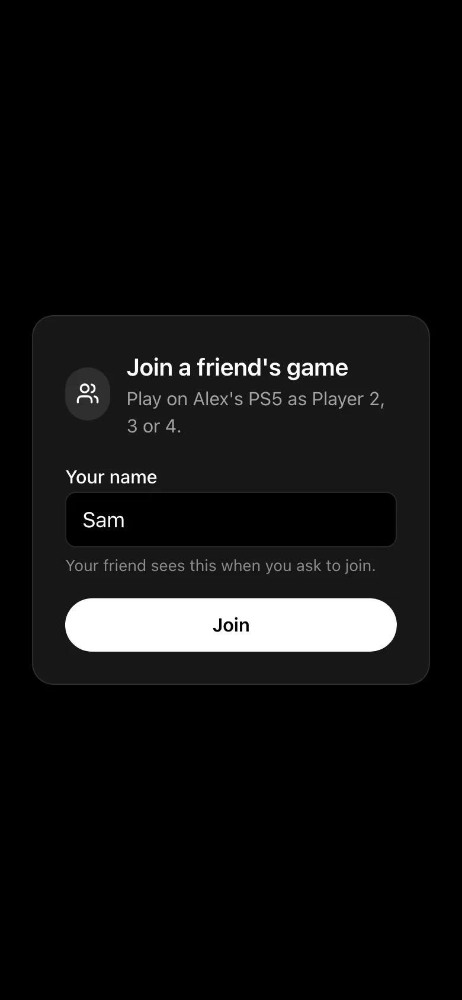
-
1
Open Play Together
In Play, open the Play Together tab, press Start and invite, then share the QR code or the link. The same link works for friends on your Wi-Fi, on Tailscale or anywhere on the internet.
-
2
Your friend scans or opens it
The game opens in their browser, in their language, with nothing to install. They type a name, and you press Allow when it pops up over the picture.
-
3
They play as Player 2 to 4
On the TV they press PS and pick Quick Play. Each friend is a separate player with your picture and sound, up to three friends at once.
Show moreShow less
Its own tab in Play
Play has three tabs: Play my PS5, Play Together and Join a friend. On Play Together, one press of Start and invite wakes the PS5, starts the stream and shows the invite.
- One invite for everyone: for each friend the app picks your home network, Tailscale or the internet
- Guests play as the PS5 profile you pick in Settings › Play Together, or the TV asks them
- Already playing? The people button on the Play bar opens the same invite
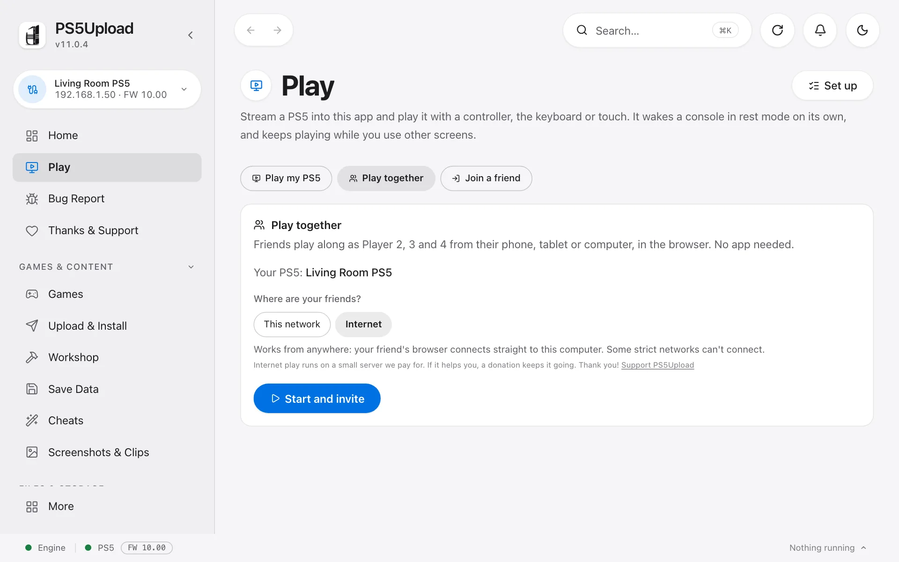
On a phone, the screen is the controller
A friend on a phone plays full screen with on-screen controls, the buttons out of the way until they press and hold the picture. A controller over USB or Bluetooth works too, and so does the keyboard.
- The picture stays within about 150 ms of the console, with rumble on their controller
- The game's sound, with a Mute button that's remembered
- A Wi-Fi blip doesn't cost them their spot: they're back as the same player within a minute
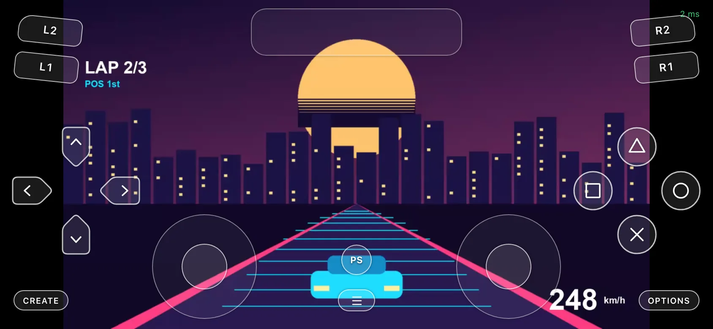
Friends anywhere, no relay
The link works from anywhere, a phone on mobile data too, and the picture comes as a video stream that holds 60 fps when a few packets go missing. A small server only introduces you: picture, sound and controls go straight between you. On a network that blocks direct connections, Tailscale gets through.
You stay in charge
Nobody plays until you allow them, and you can remove anyone. One switch turns off friends' PS and Create buttons, so a stray press can't pull everyone out of the game.
Links open in the app
A friend with PS5Upload is asked whether to open the invite in the app, the way Slack and Zoom links do, or join from Play › Join a friend with the link, the code, a QR scan or Playing nearby.
Built in
Tailscale: your PS5, from anywhere
Play your PS5 from anywhere through your own Tailscale account. There's no Tailscale app to install on any device: the app and the PS5 join your tailnet by themselves.
Put the PS5 on your tailnet
On the PS5's card in Connection, press Set up next to Tailscale and sign in, on this device or with the QR code on your phone. The PS5 gets its own Tailscale address, named after it with -ps5u.
- Only the devices you tick can reach it, and only Remote Play and PS5Upload answer
- A device that was turned away shows up, with Allow and Ignore
- Pause it without signing out: the PS5 sleeps and wakes safely either way
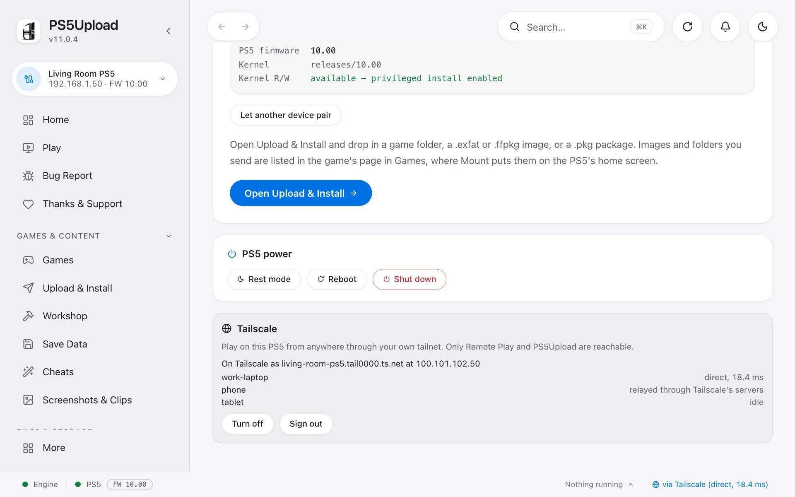
Show moreShow less
Then each of your devices
On your computer, phone or tablet, open Settings › Tailscale and sign in to the same account, or let PS5Upload use the Tailscale app you already have. Your home network always comes first: only when the PS5 doesn't answer there does the app go through Tailscale, and it tells you when it switches.
The status bar says how it's reaching the PS5:
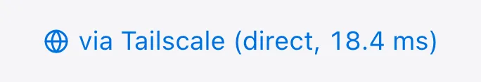
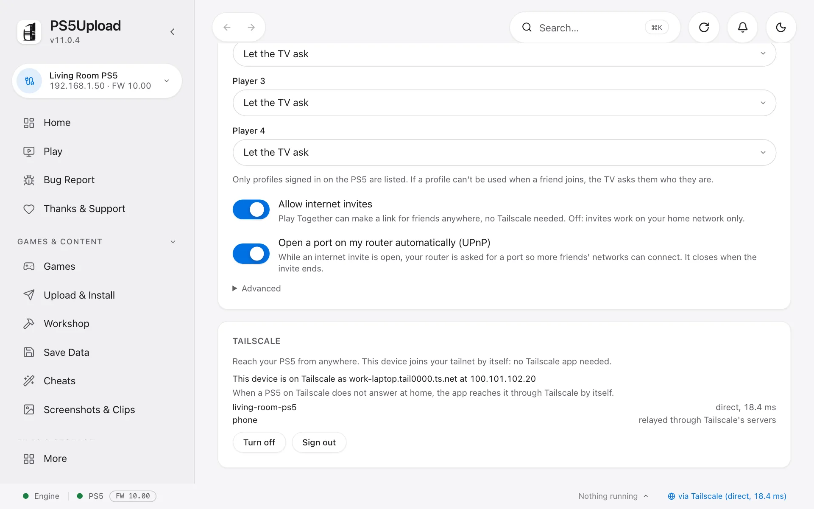
Your own devices: Tailscale
Your phone, laptop or tablet signs in to your tailnet and reaches the PS5 as if you were home: play it, and use the rest of PS5Upload too.
Friends: an internet invite
A friend doesn't need a Tailscale account. Send them an internet invite from Play Together and they join from their browser as Player 2 to 4.
Your own server works too
Run Headscale? Open Advanced before you sign in and enter your control server. You can name the device there too.
Remote Play, built in
Play is the heart of the app
Your console's screen, streamed to the device in front of you. It wakes the PS5 from rest mode, signs your user in, and you play with a controller, the keyboard or touch.
One press from Home
The Play card sits at the top of Home: press Play, or pick up your last game where you left it. Every game's page has Play too, which starts the game and streams it in one go.
- Wakes the console and signs in for you, asking for your PS5 passcode if there is one
- Keeps playing in a mini player while you use other screens, and over other apps on Android
- Fit, Fill or Stretch the picture; full screen and picture in picture
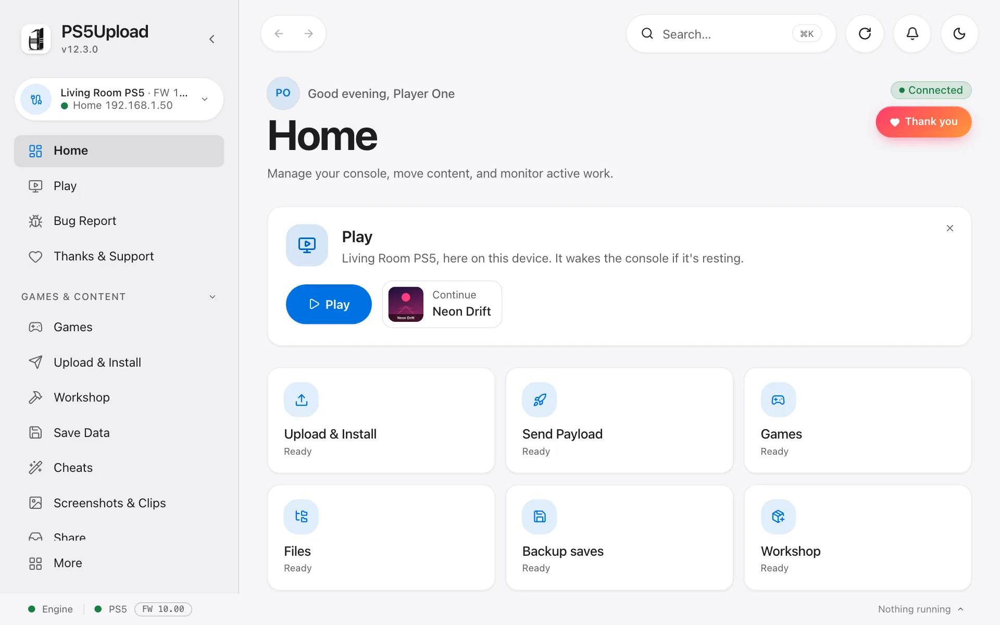
Set up once, with a checklist that ticks itself
Play › Set up walks through everything a console needs, in order. It reads the console every few seconds and ticks each step as it's done; where the app can do the step, the button is right there.
- Connect to your PS5
- Sign in to a user and give it an account ID
- Sign the account in, offline
- Turn Remote Play on
- Pair this app with the console, or with the PIN the PS5 shows
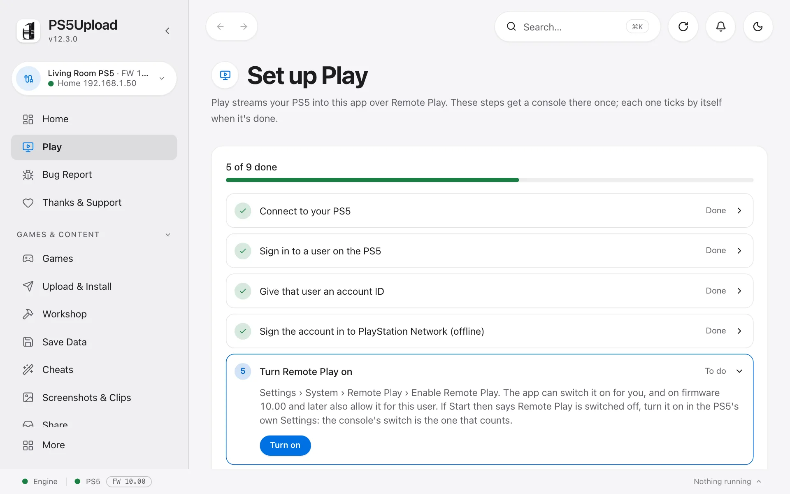
Show moreShow less
Phones as controllers and screens
Scan a code and a phone becomes a controller, or a screen for friends to watch from the couch. Hand a watcher the controller when it's their turn.
- Phones as controllers, up to four
- Watch party with sound, up to four watchers
- Instant replay, screenshots and clips, saved to your phone's photos
- Friends somewhere else? Play Together gives them their own player from a link
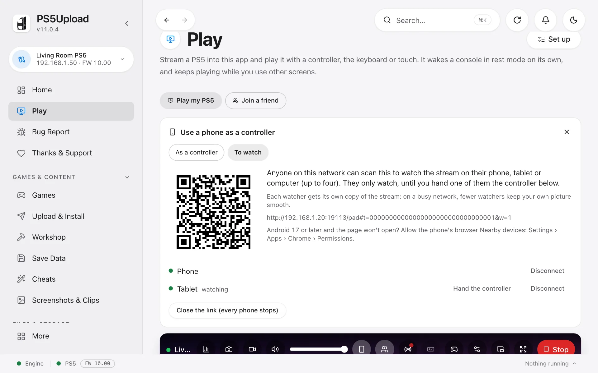
Your keyboard and mouse, as the PS5's own
Play has three ways to use your keyboard and mouse, kept for each game. Switch with the button on the stream bar, or with ⌃ ⌥ M (Ctrl+Alt+M on Windows and Linux).
- Controller: the keys and mouse act as a controller, as before
- Keyboard & mouse: the PS5 gets a real keyboard and mouse, for games and apps that support them, the PS5's browser and homebrew such as terminals
- Mixed: a real mouse, while the keys act as a controller and WASD moves
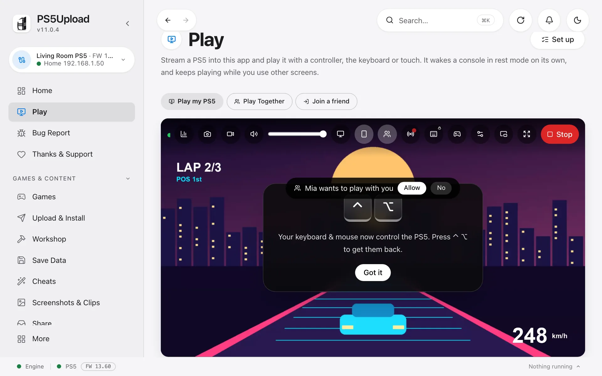
Click to play, ⌃ ⌥ to get out
Click the picture and the PS5 has your keyboard and mouse. Press and let go of ⌃ ⌥ (Ctrl+Alt on Windows and Linux) to get them back.
- A card shows the keys the first time, and again when you seem to be looking for the way out
- A faint "⌃ ⌥ to release" stays at the top while you play
- Both shortcuts can be changed in Play › Settings › Controls › Shortcuts
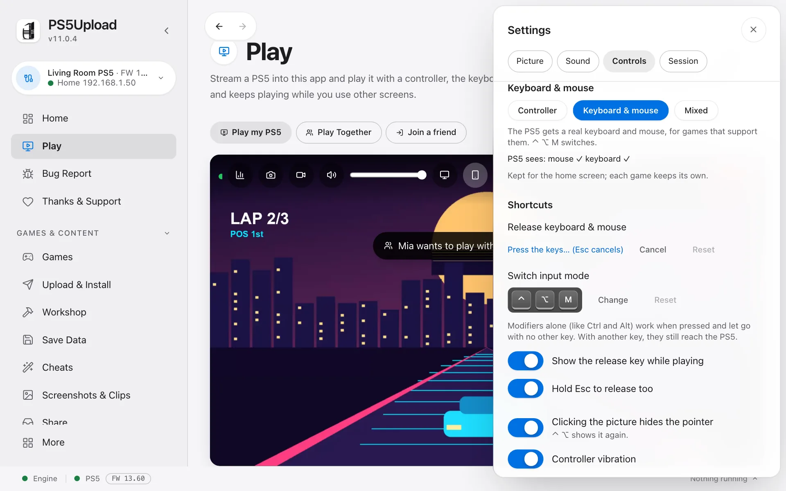
A phone as the PS5's touchpad and keyboard
On a phone or tablet, switch the picture from Controller to Touchpad: drag to move the pointer, tap to click, tap with two fingers to right-click and drag with two to scroll. ⌨ opens your phone's keyboard and types on the PS5.
A phone used as a controller has a Touchpad & keyboard tab too.
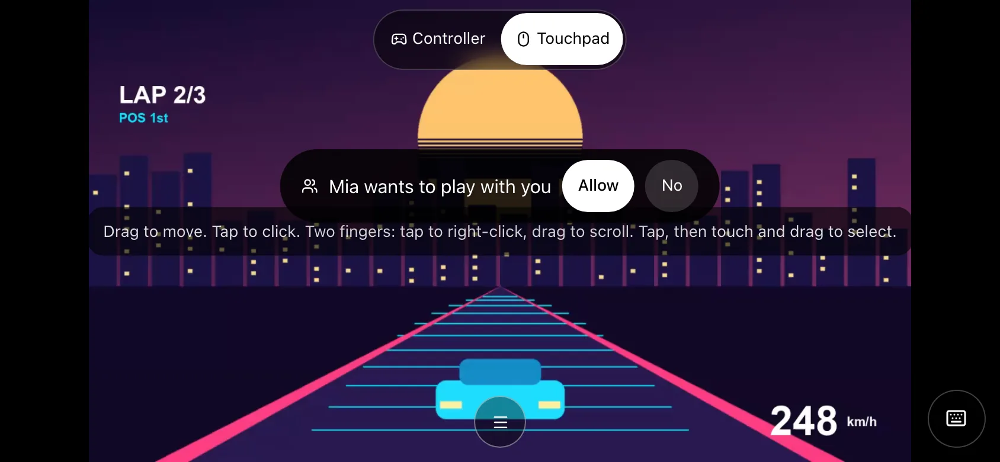
Everything in one app
Fill it, sort it, keep it
Everything between your devices and your PS5, built on its own fast transfer protocol.
Upload & Install
Drop a package, a game folder, an image or an archive: the app works out what it is and does the right thing. Transfers are resumable and run at the full speed of your network, with thousands of small files packed together so they never crawl.
- Install from your computer, a link or a network share
- A queue that carries on while you do other things: pause an upload, or send something else first
- Updates and add-ons install from each game's page
- Archives are unpacked, or sent as they are when that's what's in them (payloads, a jailbreak update)
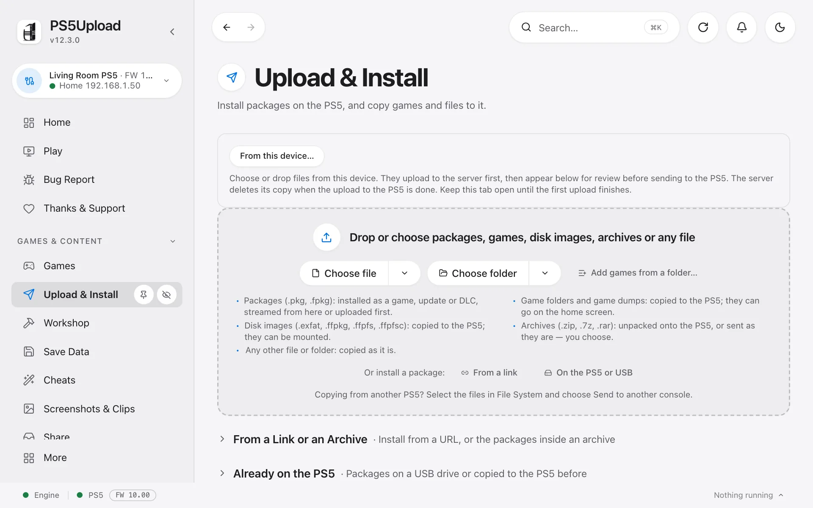
All your games, in one place
One grid for the games on your drives, your network shares and every console, with their updates and add-ons. Each game's page shows where it is and what you can do with it: Play, Launch on PS5, install, move or update.
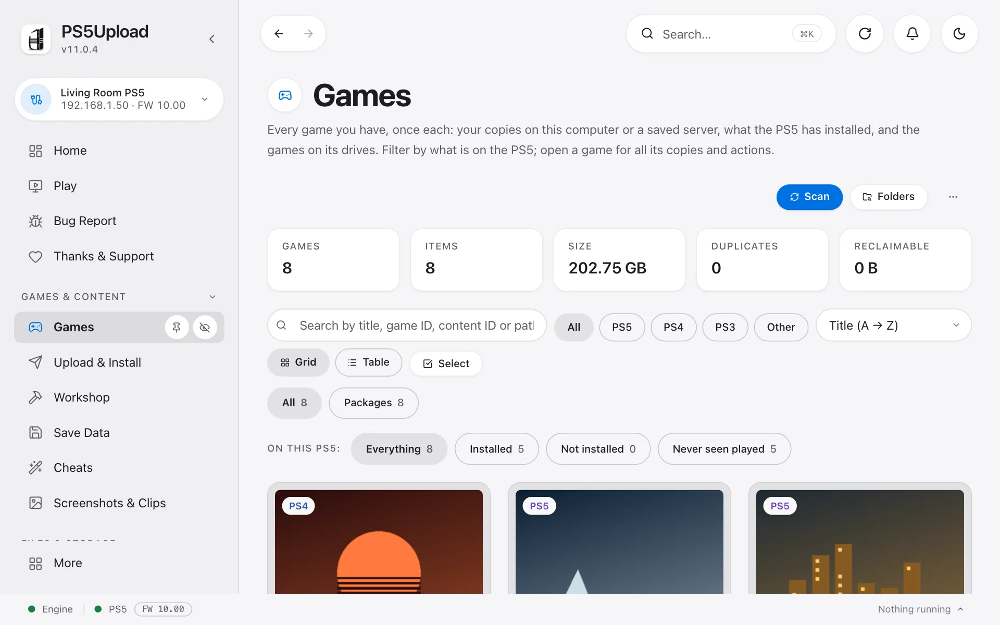
Show moreShow less
Saves and files
Back your saves up on a schedule or with one press, restore them, and copy one to another user on the same PS5 or to a friend. Emulator saves (PS1, PS2, Switch) too. Browse the console's drives like a folder on your computer: copy, move and open files both ways.
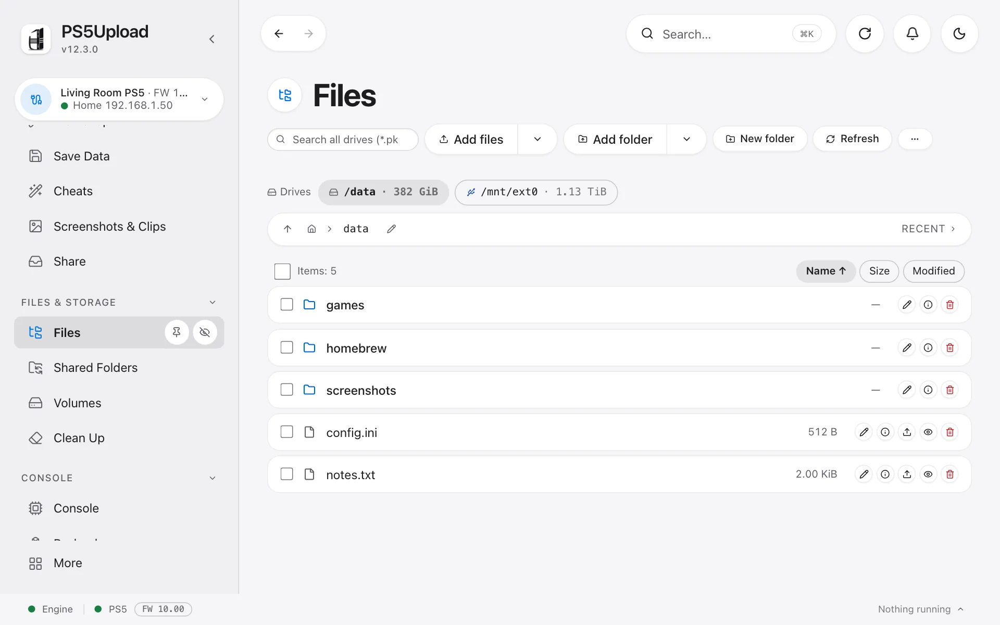
Workshop
Turn a game folder into a package or a disk image, look inside one, and make images smaller with compression. Everything runs on your computer and goes to the console when it's ready.
- Pause a conversion and carry on later; add more games to its queue while one is made
- Use less of this computer: half the processor, at low priority, so it stays quick
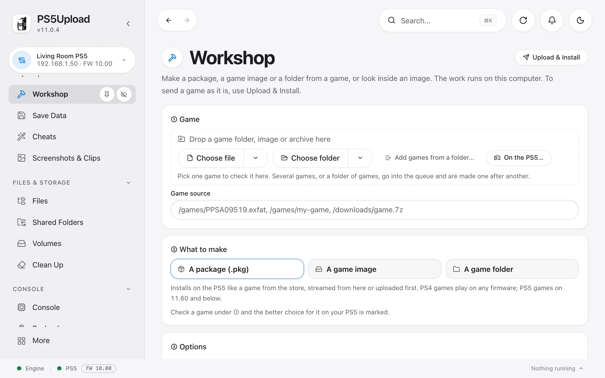
On every device you have
Native apps for macOS, Windows, Linux, Android and iPhone, and a Docker image that serves the same app as a web page from a NAS or server. Several consoles? Add them all and switch with a tap.
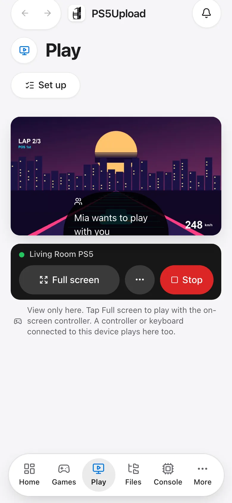
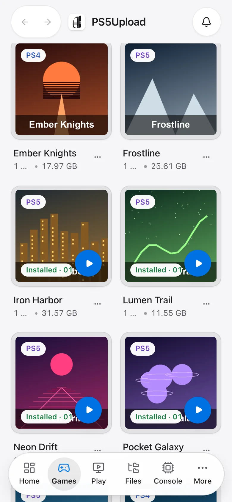
The whole list
Everything it does
Every feature in the app today, grouped. Open a group to see what's in it.
Send & install16
- Send games, apps, folders, disk images and archives at the full speed of your network, every file checked
- Uploads pick up where they stopped after a dropped connection, a restart or rest mode
- One drop zone works out what you dropped: a package, a game folder, an image, an archive or a plain file
- Unpack .zip, .7z and .rar on the way, or send the archive as it is
- Multi-part and password-protected RAR archives, in the desktop apps
- A queue with live speed and time left: pause it, reorder it, or send something first
- The queue carries on by itself after rest mode or a lost connection
- Checks for free space before anything is sent
- Install PS4 packages and PS5 fake packages (games, updates, add-ons) with the app's own installer
- Stream & install straight from your computer, or upload first and then install
- Install from a network share, a USB drive, the PS5's own storage or a download link
- If the PS5 refuses one way to install, the app offers another
- Asks before replacing a game or installing an update it already has
- Drop a package on the Play picture to install it while you play
- Choose which drive gets new packages and images
- Keeps your computer awake during transfers and installs
Games & library13
- Every game in one grid: on your computer, on network shares, installed, and on the PS5's drives
- One page per game with everything you can do: play, install, move, back up, convert, dump
- Updates and add-ons grouped with their game
- Start or close an installed game from its card, or play it in one press
- Mount disk images, and add games to the home screen or take them off it
- Move games between drives, and uninstall them
- Dump an installed game, decrypted, from its page
- Find duplicate copies, keep the largest and clean up junk files
- Tidy package folders into one layout, with a preview and undo
- Play time for each game, and your recent games on Home
- Cover art and real names, for disk images too
- Repair a game's icon and details on the home screen
- Screenshots and clips from the PS5, with HDR shots kept as HDR
Convert15
- Build an installable package from a decrypted game folder or an image
- Turn a game folder into a disk image (.exfat, .ffpkg or .ffpfs)
- Make images smaller with compression
- Turn an image, a package or a game back into a plain folder
- Write an image straight to the PS5 as it's built, with no copy on your computer
- Or straight to a server (SMB, NFS, FTP, SFTP or WebDAV); on SMB, NFS and SFTP a cut-off build picks up where it stopped
- Build PS4 packages from a PS4 game, or from a game merged with its update, every file checked
- Convert PS4 fake packages into an image or a folder
- Merge a PS4 game and its update into one game at the update's version
- Turn PS4 add-ons that have data into a folder
- A queue converts games one after another, then sends each to the PS5
- Pause a build and carry on later; a build that stopped picks up where it was
- Use less of this computer: half the processor, at low priority
- Look inside an image or a package, and edit an image in place
- Fixes for games that need them, and backport tools for older firmware
Files & servers11
- Browse the PS5's files like a folder: copy, move, rename, delete and make folders
- Download files and folders from the PS5, or a whole folder as a .zip
- Unpack archives on the console itself
- Search every drive, and see what takes up space
- Games and files from SMB, NFS, FTP, FTPS, SFTP and WebDAV servers
- Games on a NAS are scanned where they are and join your library
- Connect the PS5 itself to your network shares
- Mesh Drive: one folder kept the same on all your devices
- Send files from one PS5 to another
- See every drive and its free space, and eject USB drives safely
- In the web UI, add files and folders from the phone or computer you're on
Saves10
- Back up saves on a schedule or with one press
- Back up to a folder, a network share or a USB drive
- Restore any backup; the current save is kept until the restore has worked
- Copy a save to another user on the same PS5
- Copy a save straight to another PS5
- Share a save as a file a friend loads under their own account
- Open a save on your computer for a save editor, then write it back
- Move saves over from a PS4
- PS1, PS2 and Switch emulator saves too
- While you play, snapshot the game's save in one press
Remote Play & Play Together27
- Play your PS5 on your computer, phone or tablet, or in a browser
- Play wakes the console from rest mode and signs your user in
- A setup checklist that ticks itself and fixes what it can
- Play with a controller, the keyboard, or touch controls on a phone
- DualSense rumble, haptics, adaptive triggers, motion and touchpad
- Remap buttons, turbo and macros, kept for each game
- 1080p or 720p, 60 or 30 fps, your choice of bitrate, a low-latency mode and HDR
- Sharpen and upscale the picture to your screen, or crop it to 21:9
- Picture in picture, and a mini player while you use the rest of the app
- Your microphone to the console, for voice chat
- Instant replay, screenshots and clips, saved to your phone's photos
- Choose which PS5 user to play as, with its passcode when it has one
- Phones as controllers, up to four
- Watch party: friends watch on their phones, with sound
- Play Together: friends join as Player 2, 3 and 4 from a link, a QR code or a short code
- Internet invites: friends join from anywhere, and the picture goes straight between you
- Friends need no app: a phone browser will do, or the app opens the invite
- Nobody plays until you press Allow; remove anyone, and turn off their PS button
- Play on your TV and use the app only to invite friends
- A dropped stream or friend reconnects by itself, in the same place
- Play from anywhere through your own Tailscale, with no Tailscale app: direct or relayed, with the delay shown
- Play Together has its own tab: Start and invite in one press
- Guests play as the PS5 profile you choose, or the TV asks them
- Phones as controllers and watchers over the internet too, each one allowed by you
- Third-party controllers (8BitDo, Switch Pro, Logitech and more) work right, and Check your controller sets up any other
- One invite link for your Wi-Fi, Tailscale and the internet: the app picks the way for each friend
- Over the internet the picture is a video stream that holds 60 fps, and the panel shows how each friend is connected
Your PS5s & Share9
- Every PS5 on one page: online or not, home network or Tailscale, helper, firmware and who may use it
- Add a PS5 with one scan of your home network and your Tailscale network
- Invite a device: a QR code or link that adds the PS5 on a new phone or computer
- Ask before a new device can connect: Allow or Decline from any device or the PS5's own page
- See how each device got in, and revoke or block it
- Connects in about a second; a PS5 shows as unreachable only after three failed checks
- Settings kept for each PS5: keep awake, rest after uploads, wake for uploads and more
- Share saves, screenshots and clips, cheats, controls, a note and homebrew apps with a friend
- Your friend asks and you allow; it goes straight between you, on your Wi-Fi or over the internet
Keyboard & mouse5
- Give the PS5 your computer's keyboard and mouse as its own
- Three modes, kept for each game: controller, keyboard & mouse, or mixed
- Click the picture to start, a key combination to get out; both can be changed
- A phone or tablet as the PS5's touchpad and keyboard
- Type into the PS5's on-screen keyboard from your device
Go live8
- Stream your game to YouTube, Twitch, Kick or Facebook from Play
- Several sites at once, or any RTMP, RTMPS or SRT server
- Checks each site's limits and offers settings that fit
- Reconnects by itself if the connection drops, while you keep playing
- Try it on Twitch first without going public
- Add the stream to OBS for your own scenes and overlays
- Stream keys are stored encrypted and never shown again
- Go live from the web UI in Safari on an iPhone or iPad, with the engine on a computer
Console tools20
- Send payloads from a catalogue, your own lists or files, with playlists and loading at boot
- Keep payloads on the console in Payload Manager, the helper too, to start them with no computer
- Payload updates: update one or all, roll back, or keep them up to date by themselves
- Choose which payloads Payload Manager keeps on each console and loads at boot, and sync them
- Make a USB stick that loads your payloads
- Set up a fresh console in one go: the right payloads, in the right order
- Cheats: find, download and switch them on, applied when the game starts
- Temperatures, fan, clocks and storage at a glance
- Set the fan threshold or a whole fan curve
- Rest mode, restart and shut down, and wake over the network into your user
- Disc drive, beeper and front light controls
- Clean up leftover files
- Health check and speed test: what to fix between the PS5, the app and the network
- See what's running and which ports are open, and stop a process
- PS5 users: avatars, offline sign-in, account ID and backups
- Backup & Restore: keep saves, settings, captures and homebrew before a reset
- Read and clear the PS5's notifications
- A console shell, the kernel log and an audit log, for when something is off
- PS5Upload Minion: a page in the PS5's own browser for games, saves, files, payloads and cheats
- Bug Report: the app's, the engine's and the console's logs in one zip, private details removed
Platforms12
- Apps for Windows, macOS and Linux, on x64 and ARM
- An Android app, and an iPhone app to sideload or add from an AltStore, SideStore or Feather source
- A Docker image serves the whole app as a web page from a NAS or server
- 21 languages, matching your system
- Several consoles in one app; switch with a tap
- Computers, phones and Docker can use one PS5 at once and see what the others are doing
- Finds PS5s on your network, and follows one that changed address
- Away from home, the whole app reaches your PS5 through Tailscale, set up from the app
- Tailscale your way: home network first, only the devices you add, pause without signing out, or use the Tailscale app you already have
- Updates itself in the background, and installs the update when you quit
- Settings backed up every day, to your computer and to each console
- Light and dark themes, plus OLED black and Peach
AI agents & scripts9
- A built-in MCP server lets AI agents use PS5Upload, with more than 120 tools
- One-click setup for Claude Code, Codex and OpenCode; copy and paste for other agents
- Agents get new tools by themselves when the app updates
- A switch in the app decides whether agents can change things or only look; risky tools ask first
- An HTTP API for everything, described in OpenAPI
- A queue per console runs uploads, installs and conversions in order, and survives restarts
- Live events, so scripts can follow progress
- Scripts can watch and play a Remote Play session
- The running stream as a live feed for OBS or ffmpeg
Guide
Get started in five steps
From download to your first game on screen. Most of it happens once.
-
1
Install the app
Download it for your computer or phone below. On a NAS or server, run the Docker image and open it in a browser instead.
-
2
Load the helper on the PS5
Start your PS5's payload loader as you usually do, then press Send helper on the Connection screen. The helper is how the app talks to the console.
-
3
Connect
Type the console's address on the Connection screen, or let the app find it on your network. The status at the bottom turns green when it's there.
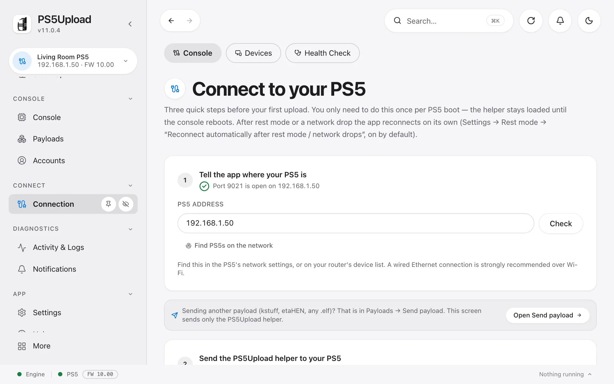
-
4
Set up Play
Open Play › Set up and follow the checklist. Each step ticks by itself when it's done; the one only the console can show (its rest-mode settings) you tick yourself.
-
5
Play, and fill it up
Press Play on Home. To add a game, drop it on Upload & Install; it shows up in Games with Play ready when it's installed.
How do I…
Play together with a friend
- Open Play › Play Together and press Start and invite. Already playing? Press the people button on the picture's bar (on a phone, ⋯ › Play Together).
- Send your friend the link, or let them scan the QR code. Press Allow when their name pops up.
- On the TV, they press PS and pick Quick Play (or their own user), then play.
Friend somewhere else? Choose Internet before you start, or above the QR code, and send them that link. The FAQ has the details (in English).
Play with a phone as the controller
- Start Play on your computer.
- Press the phone button on the picture's bar.
- Scan the code with the phone's camera. The phone opens a controller; turn it sideways.
In the PS5Upload app on a phone, Play shows the computer that's playing: tap Use this device as its controller.
Let friends watch
- In the phone panel, choose To watch.
- Friends scan the code: the stream plays in their browser, with sound after a tap.
- Press Hand the controller next to someone to let them play.
Install a game or an update
- Drop the package on Upload & Install, or pick it with Browse.
- It joins the queue and installs; you can keep using the app.
- For an update or add-on, open the game's page in Games and install it from there.
Back up and restore saves
- Open Save Data and choose a folder for backups.
- Back up one game, or turn on automatic backups.
- To go back, pick a backup and press Restore (close the game first).
While playing, the game panel takes a snapshot of the running game's save in one press.
Make the picture sharper on a big screen
- In Play, open Settings › Picture.
- Turn on Upscale to the screen, and set Sharpen to taste.
It runs on your graphics card and turns itself off if the device can't keep up.
Use it from a browser (Docker)
- Run the Docker image on your NAS or server (the command is below).
- Open port 19113 on that machine in a browser.
- The whole app is there. Play needs an https:// page, so to play from another computer or a phone, put the engine behind an https proxy or use the desktop or phone app.
Use it from a phone
- Install the app: the Android or iPhone download below. The iPhone app is sideloaded with AltStore or Sideloadly and an Apple ID; a free one works.
- Open Connection, enter the PS5's address and send the helper. The app talks to the PS5 directly, Play included.
- Rather use a browser? Open port 19113 of a computer at home that runs the Docker image, or port 9180 of the PS5 for its own page (first turn on Allow other devices on the network in that page's Settings).
Play in a browser needs an https:// page. Over a plain http:// address, play with the app.
Play away from home
- At home, open Connection, press Put this PS5 on Tailscale and sign in to your Tailscale account (a free one works).
- On the phone or laptop you'll take with you, open Settings › Tailscale and sign in to the same account. No Tailscale app needed.
- Away from home, connect and play as usual. The status bar shows via Tailscale, direct or relayed, with the delay.
Only Remote Play and PS5Upload can be reached through Tailscale. How smooth it is depends on your home connection's upload speed, and waking the PS5 from rest mode from far away may not work: leave it on. Never open the app's ports to the internet instead: it has no password. Headscale works too, under Advanced.
Only want a friend far away to play along? Send them an internet invite from Play Together instead: they don't need a Tailscale account.
Wake the PS5 without the TV
- The TV turns on with the PS5 because of HDMI-CEC.
- On the PS5, turn off Settings › System › HDMI › Enable HDMI Device Link, or turn off CEC on the TV (Anynet+, SIMPLINK, BRAVIA Sync…).
- Wake and Play now leave the TV off. The controller won't turn the TV on any more either.
See where Play's delay comes from
- Press Stats on the picture's bar (on a phone, in the ⋯ menu).
- The line net · queue · decode · screen shows each stage in ms: the network to this device, the wait for the decoder, decoding, and showing the picture.
- A big net: a cable for the PS5 and 5 GHz Wi-Fi help most. A big decode: try 720p. Low latency in Play's settings shortens the queue.
The PS5's own part and your TV's delay aren't in these numbers; use the TV's game mode.
Something isn't working
- Open Bug Report in the sidebar: it builds a report with the app's logs.
- Attach it to an issue on GitHub, or ask on Discord.
- Hard to catch? Turn on Detailed logs in the Logs tab, make it happen again, then build the report. It turns itself off after 24 hours.
The in-app Help screen answers most questions. Its FAQ is in English, and it is also on this site, with a search.
Download
The newest release for every platform.
Loading the latest release…
Docker (the app as a web page on your NAS or server)
Serves the app on your network: open port 19113 in a browser. Start from engine/compose.yaml, or change the command's two addresses and its folder to your own. Docker Desktop on a Mac or Windows PC has no host networking; follow the FAQ there.
docker run -d --name ps5upload --network host -v ps5upload-data:/data -v /srv/ps5/pkgs:/pkgs:ro -e PS5_ADDR=192.168.1.50 -e PS5UPLOAD_ALLOW_IP=192.168.1.0/24 -e PS5UPLOAD_BROWSE_ROOTS=/pkgs ghcr.io/phantomptr/ps5upload-engine-webui:latest
iPhone: updates through AltStore, SideStore or Feather
Add this source once and the app shows up there with its updates. In Feather, paste it into Source URL and press Save; Import is for lists from other apps. Feather also needs your own signing certificate.
https://ps5upload.phantomptr.com/altstore.json
The PS5 helper and the engine on its own
News
Full changelogLoading releases…
Thank you
PS5Upload is free, and it keeps getting better because of the people below. Every coffee pays for test hardware, late nights and the next release. Thank you, all of you.
Support PS5Upload
Ko-fi
Card or PayPal, once or monthly
The easiest way: a coffee, or whatever you like. Your name joins the wall with the next release (or stay anonymous).
♥ Coffee or tokensCrypto
Straight to my hardware wallet
Bitcoin
Network: Bitcoin
bc1q36gxkvd3wfxy9azm8hft3rru9m6m9hjvn7u20n
Send only BTC on the Bitcoin network. Anything else can't be recovered.
No destination tag needed: this is my own wallet, not an exchange.
Wall of thanks
Names are shown as you gave them on Ko-fi, and the list grows with each release. Want yours changed or taken off? Just say so on Discord.
Community
Discord
Help, setup questions and ideas. Release announcements land here first.
Report a bug
Open an issue on GitHub. The app's Bug Report screen builds a report with logs to attach.
X
Follow @phantomptr for releases.
Coffee or tokens
PS5Upload is free. If it saves you time, a coffee for me or AI tokens for the code keeps it going, and please support the people behind the other tools you use too.
Let scripts and AI agents drive it
Everything the app does with your PS5 is also an API on your own computer, with an MCP server built in, so an AI agent can check a console, move files, install a game or play through Remote Play.
MCP for AI agents
Works with Claude, Cursor, Codex, Gemini CLI and other MCP clients. There is nothing extra to install, and it can run read-only.
An HTTP API for scripts
Every route is described in an OpenAPI document the engine serves itself, and a guide covers errors, long calls and events.
It stays yours
There is no password, so by default it answers only the computer it runs on. You choose who else can reach it. Keep it off the internet.